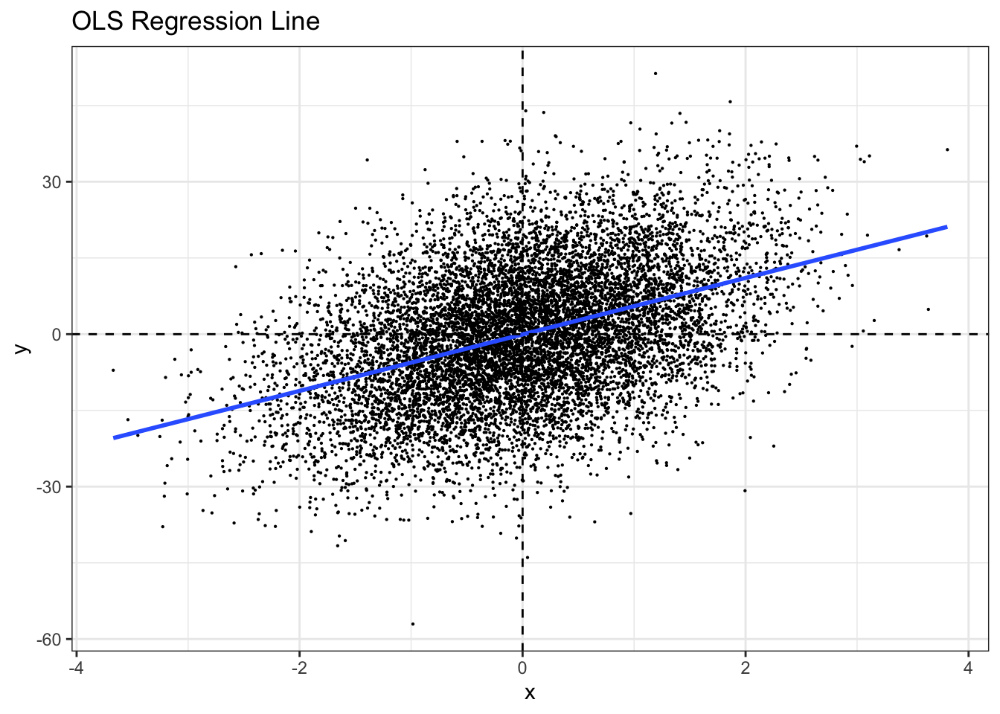
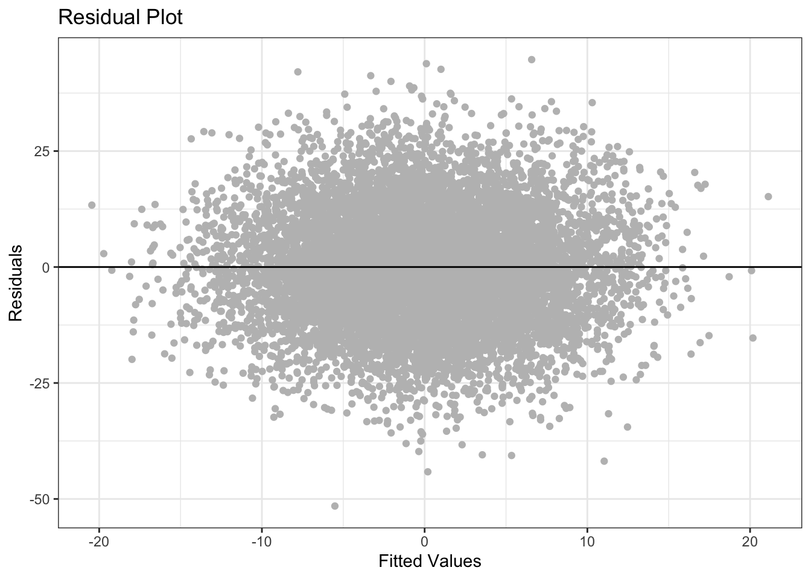
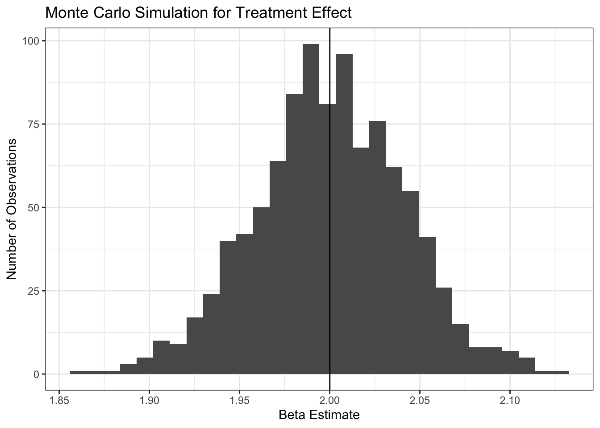

2 Linear Regression
2.1 An Example
Note: the output will not be identical because STATA’s RNG is unclear, but the coefficients will be close
set.seed(1)
N <- 10000
x <- rnorm(N, 0,1)
u <- rnorm(N, 0,1)
y <- 5.5*x + 12*u
m1d <- data.frame(y = y, x=x, u =u)
m1 <- lm(y~x, data = m1d)
yhat1 <- predict(m1)
yhat2 <- 0.0732608 + 5.685033*x
uhat1 <- residuals(m1)
uhat2 <- y - yhat2
# Bring all of them into a data frame for plotting
m1d <- data.frame(y = y,
x = x,
u = u,
uhat1 = uhat1,
uhat2 = uhat2,
yhat1 = yhat1)2.2 Regression Plot
library(ggplot2)
theme_set(theme_bw())
ggplot(data = m1d, aes(x = x, y = y))+
geom_point(size = .1)+
geom_smooth(method = "lm", se =F)+
geom_hline(yintercept = 0, linetype = "dashed")+
geom_vline(xintercept = 0, linetype = "dashed")+
ggtitle("OLS Regression Line")
2.3 Residual Plot
To make a residual plot, we can exploit a little trick in ggplot. Another way to do this would be to manually specify variables in the aes() function as in the previous example.
ggplot(lm(y~x, data = m1d))+
geom_point(aes(x = .fitted, y = .resid), color = "gray")+
geom_hline(yintercept = 0, col = "black")+
xlab("Fitted Values")+
ylab("Residuals")+
# Remove the legend because it is unnecessary
theme(legend.position = "none")+
ggtitle("Residual Plot")
2.4 OLS Residuals Add up to Zero by Construction
# Brand new set of variables
set.seed(1234)
N <- 10
x <- 9*rnorm(N)
u <- 36*rnorm(N)
y = 3 + 2*x + u
m2 <- lm(y~x)Here is a different way to get the values of a model. We’re directly calling attributes of our lm object
fitted <- m2$fitted.values
yhat<- predict(m2)
residuals <- m2$residuals
print(cbind(x,u,y, yhat,residuals))## x u y yhat residuals
## 1 -10.863592 -17.178937 -35.906121 -17.4087418 -18.497379
## 2 2.496863 -35.941912 -27.948186 -0.7283636 -27.219822
## 3 9.759971 -27.945140 -5.425199 8.3395447 -13.764744
## 4 -21.111279 2.320517 -36.902041 -30.2028650 -6.699176
## 5 3.862122 34.541786 45.266031 0.9761470 44.289884
## 6 4.554503 -3.970278 8.138728 1.8405767 6.298152
## 7 -5.172660 -18.396342 -25.741661 -10.3036769 -15.437985
## 8 -4.919687 -32.803035 -39.642408 -9.9878430 -29.654565
## 9 -5.080068 -30.138180 -37.298316 -10.1880772 -27.110239
## 10 -8.010340 86.970066 73.949386 -13.8464896 87.795875## [1] 02.5 Monte Carlo Simulation
set.seed(1234)
N <- 10000
sim_ols <- function(N){
x <- 9*rnorm(N)
u <- 36*rnorm(N)
y = 3+2*x + u
model <- lm(y~x)
# Since there are only two coefficients the second is $\Beta_1$
beta <- model$coefficients[2]
}
# Preallocate memory to our list to speed computation
beta <- c(NA_real_)
length(beta) <- 1000
# For loops are fine for intuition, and the appreciable loss of speed in negligible for most applications
for(i in 1:1000){
beta[i]<-sim_ols(N)
}
mean(beta)## [1] 2.000071ggplot(data = data.frame(beta = beta), aes(x=beta))+
geom_histogram(bins = 30)+
geom_vline(xintercept = mean(beta))+
xlab("Beta Estimate")+
ylab("Number of Observations")+
ggtitle("Monte Carlo Simulation for Treatment Effect")